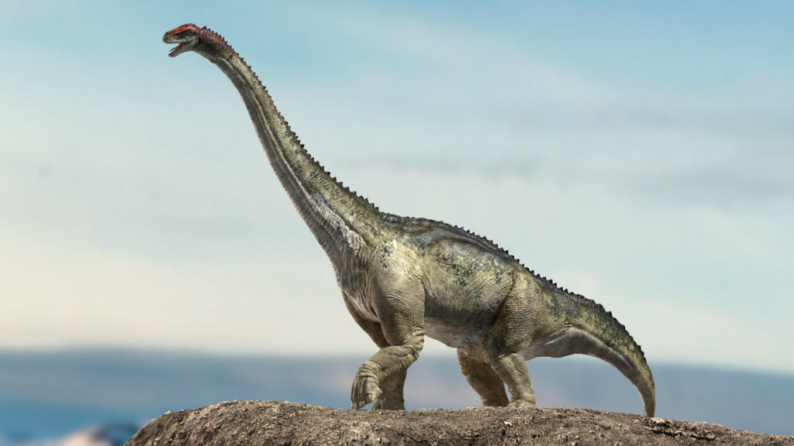

Plesiosaurus (del griego: πλησιος [plesios], 'cercano a' y σαυρος [sauros], 'lagarto'), o plesiosaurio, es un género extinto de gran reptil sauropterigio marino que vivió a principios del período Jurásico, y es conocido de esqueletos casi completos del Lias de Inglaterra. Se distingue por su pequeña cabeza, su cuello largo y delgado, un cuerpo ancho como el de una tortuga, una cola corta, y dos pares de grandes aletas alargadas. Este animal dio nombre al orden Plesiosauria, de la cual es un miembro primitivo, pero típico: P.brachypterygius, P.guilielmiiperatoris y P.tournemirensis fueron asignados a los nuevos géneros Hydrorion, Seeleyosaurus y Occitanosaurus.
Comparado a otros géneros de plesiosaurios, Plesiosaurus tenía una cabeza pequeña. La órbita se sitúa aproximadamente a la mitad del cráneo con un rostro súbitamente bajo y triangular y el tope del cráneo siendo alto, con una cresta sagital relativamente estrecha. Las barras postorbitales formaban la parte más amplia del cráneo. El gran foramen pineal ocupaba el punto central entre estas barras en el medio del techo del cráneo. Tanto la órbita como la fenestra temporal son casi circulares y prácticamente del mismo tamaño. Las narinas exteriores se superponen a las internas y no son explicítamente sugerentes de olfato subacuático.1 Dichas capacidades han sido sugeridas para el pliosaurio Rhomaleosaurus. Plesiosaurus tenía una unión posterior de los pterigoideos y el basioccipital típica de los plesiosaurios.1 Sin embargo, la conexión entre el paladar y el cráneo estaba incompletamente reforzada. Esta conexión es menos robusta que la de los pliosaurios Rhomaleosaurus y Pliosaurus. Los huesos del paladar son delgados, pero sin una fenestra suborbital. El ramo mandibular forma una "V" casi perfecta en un ángulo de casi 45° con solo una leve curvatura medial. El extremo anterior del hueso dentario es amplio y robusto. Una fuertemente fusionada sínfisis apuntando como una cuchara hacia abajo, incorporaba 2,5 pequeñas cavidades en cada rama.A Plesiosaurus le ha sido tradicionalmente adjudicado un único diente en la sínfisis, así como a otros géneros de cuello largo.6 Los dientes de Plesiosaurus son simples, conos en forma de aguja levemente curvados y circulares en sección transversal.4 Los dientes son delgados y afilados con finas estrías longitudinales. Dichas estrías corrían desde la cavidad de la raíz hasta cerca de la punta del diente. Todos los dientes son procumbentes, especialmente aquellos más cercanos a la parte anterior, yaciendo cerca de 10-15° sobre el horizontal.
 Inicio |
 Tyrannosaurus |
 Brontosaurus |
 Ankylosaurus |
 Pterodactilo |
 Velociraptor |